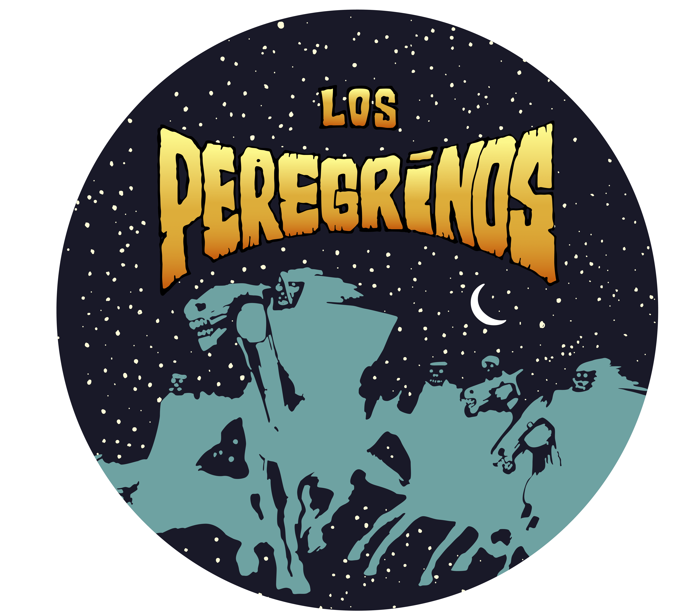

Página web oficial
Acá encontrarás nuestro primer álbum para descargar
y también formas de contactarte con nosotros

1 - El soldado
2 - La memoria del bisonte
3 - El viento, la brisa y la prisa
4 - Anestesia
5 - La mirada de las plantas
6 - Paradigma
7 - Desafío al destino
1 - El soldado (Lorenzo Chelone)
que siempre espero tus rayos.
No será un día más
cuando al fin caiga en tus brazos
Solo soy un soldado que lucha para volver.
No será un día más...
2 - La memoria del bisonte (Lorenzo Chelone)
Este sol que ahora ves no es real como lo fue,
pero igual me calienta la piel
Caminando me encontré un río negro,
en sus aguas me bañé y ahora estoy seco
Ahora estoy seco como ayer
La memoria del bisonte no se iba y ya se fue.
Solo nos quedó el alcohol para llamarla, y (así, ¿ves?):
matarla una y otra vez.
Hoy empiezo a despejar las nubes negras,
y el sol que está detrás me calienta la piel
3 - El viento, la brisa y la prisa (Gus Jara)
y que tu corazón jazzea la prisa del tiempo
de los y las, ¡y les quepan en el alma!.
Es que con tu amor no se puede evitar
en los ojos como sinceridad.
Es que mi buena suerte se fue de gira con mis malos hábitos
por las prisas del andar se han hecho camino en el tiempo
Es que tan solo he querido acentuar un recuerdo.
(sé que muchas veces ha sido tracción a sangre...)
4 - Anestesia (Lorenzo Chelone)
espejismos de nubes y sol tan solo nublan tu andar
Puede ser que mi voz se equivoque otra vez,
pero el pibe quiere un orador que anestesie... que anestesie su ser.
“Vos no vas a luchar”, Acá hay alguien que parece saber hablar
si estoy solo me da igual...
Ciertamente una vez me pregunté si la Tierra traería la cura,
porque de esa gente buena ya no nos queda ninguna
La verdad no se puede ocultar pero se puede vencer
la mentira es creer que hoy puede ser como ayer
“Vos no vas a luchar”, acá hay alguien que parece saber hablar
si estoy loco me da igual... algo va a bajar.
nunca tuve acuerdos de lo que iba a llegar..
solamente un sueño que se hace grande con los ojos abiertos.
Las plantas me ríen y me lloran,
la mentira cae por su tierra (tierra negra)
Solamente un sueño las hará grandes con sus hojas al viento.
Solamente un sueño nos hará grandes con los ojos a negro a todo lo que hay
¿podrán los días pasar desapercibidos de tanto cielo?
¿podrá la vida ser consumida?
Soy un cyborg sin minutos de la cátedra de posgrado
de los malogrados ratos de la historia
donde la justicia aún no ha llegado
Aunque sobran verdades que no caben en los versos,
sobran silencios que no caben en el alma
Y cuando amas pasa de repente, y cuando creas es diferente
a ser igual al resto de la gente (¿podrán los días ser suficientes?)
Soy un cyborg sin minutos de la cátedra de posgrado
y aunque sobran verdades que no caben en los versos, sobran silencios...
Y cuando creas pasa de repente y cuando amas es diferente
a ser igual al resto de la gente (¿podrán los ríos ser suficientes?)
Y cuando amas pasa de repente... y cuando creas es diferente
a ser igual al resto de la gente ¿podrán los días ser suficiente?
¿podrán los ríos ser suficiente?...
No puedo negar todo mi pasado
no reniego de todo lo sentido
yo juré nunca soltarte la mano
y fue como un desafío al destino
Bagual desbocado corriendo al viento
dejando a su paso fuego y cenizas
estrella fugaz en el firmamento
verdades escondidas que lastiman
¡Uy! ¡vengo de la nada!
¡y estoy en la confusión!
¡Uy! ¡venimos de la nada!
¡y estamos en la confusión
y la soledad!
Huir no nos redime del pecado
ni sepultar a quién hemos amado
la vergüenza es cosa de la gente
y la culpa solo existe en tu mente
Dos terneros guachos van y se maman
sobre una barra bajo el sol naciente
de un ojo una lágrima resbala
pero eso al mundo le es indiferente
¡Uy! ¡vengo de la nada!
¡y estoy en la confusión!
¡Uy! ¡venimos de la nada!
¡y estamos en la confusión
y la soledad!
¡no quiero renunciar a mi pasado!
(dejar de ver letras)


( Gus Jara-Austin Trosco-Nahuel Hueiss-Lorenzo Chelone )